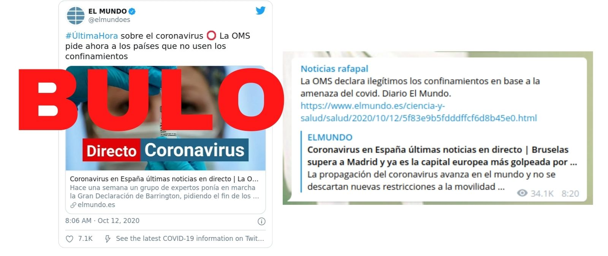
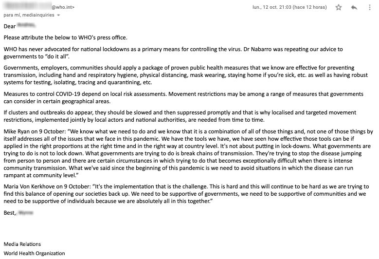

No, la OMS no ha pedido ahora a los países que no usen los confinamientos ni los ha declarado 'ilegítimos': pide que no sea el método principal pero los considera justificados para ganar tiempo

El diario
El Mundo publicó el 12 de octubre que 'la OMS pide ahora a los países que no usen los confinamientos'.El negacionista de la COVID-19 Rafapal replicó este contenido en su canal de Telegram y su página de Facebook diciendo que 'La OMS declara ilegítimos los confinamientos en base a la amenaza del covid'.Es un bulo: la OMS no ha considerado los confinamientos ilegítimos ni nunca ha pedido que los confinamientos nacionales sean la medida principal para controlar el virus sino que ha apuntado siempre a la búsqueda de casos, aislamiento y las pruebas, entre otras actuaciones como las principales medidas contra la COVID-19.No obstante, la OMS incluye los confinamientos entre las medidas a tomar en ciertas circunstancias para ganar tiempo.No ha habido ningún cambio en la postura de la OMS sobre los confinamientos.
Este bulo se basa en una declaración manipulada de uno de los enviados especiales de la Organización Mundial de la Salud (OMS) para la COVID-19, David Nabarro, realizada el 9 de octubre al medio australiano
The Spectator .Nabarro declaró que 'nosotros en la Organización Mundial de la Salud no promovemos los confinamientos como la principal medida de control de este virus.La única vez que creemos que un confinamiento está justificado es para ganar tiempo para reorganizar, reagrupar, reequilibrar tus recursos; proteger a tus trabajadores sanitarios que están agotados.Pero en general, preferimos no hacerlo'.Nabarro también dijo que 'apelamos a todos los líderes mundiales: dejen de usar los confinamiento como su principal método de control.Desarrollen mejores sistemas para hacerlo.Trabajen juntos y aprendan unos de otros, pero recuerden: los confinamientos sólo tiene una consecuencia, que nunca deben minusvalorar y es que empobrecen mucho más a las personas pobres'.
Contactada por
Maldito Bulo , la oficina de comunicación de la OMS ha afirmado que 'la OMS nunca ha pedido que los confinamientos nacionales sean la medida principal para controlar el virus.El doctor Nabarro estaba repitiendo nuestro consejo a los gobiernos de 'hacerlo todo''.Según la OMS, 'las medidas para controlar la COVID-19 dependen de la evaluación de riesgos local.La restricción de movimientos puede estar dentro del abanico de medidas que los gobiernos pueden considerar en determinadas áreas geográficas'.
'Si aparecen brotes, deben ser frenados y luego suprimidos con prontitud, por lo que de vez en cuando se necesitan restricciones de movimiento localizadas y selectivas, aplicadas conjuntamente por los agentes locales y las autoridades nacionales', añade la OMS.

Además, el 12 de octubre el director general de la OMS Tedros Adhanom Ghebreyesus declaró que 'hay muchas cosas que los países pueden hacer y están haciendo para controlar la transmisión y salvar vidas.No es una elección entre dejar que el virus circule libremente y cerrar nuestras sociedades'.El director general de la OMS aclaró que los brotes pueden ser controlados aplicando medidas específicas como proteger al vulnerable.La OMS recomienda 'la búsqueda de casos, aislamiento, pruebas, cuidado compasivo, rastreo de contactos, cuarentena, distanciamiento físico, higiene de manos, mascarillas, etiqueta respiratoria, ventilación, evitar las multitudes y más'.
Pero el director general de la OMS también reconoce 'que en ciertos momentos, algunos países no han tenido más remedio que emitir órdenes de confinamientos y otras medidas, para ganar tiempo.Muchos países han aprovechado ese tiempo para elaborar planes, capacitar a los trabajadores de la salud, establecer suministros, aumentar la capacidad de realizar pruebas, reducir el tiempo de las mismas y mejorar la atención a los pacientes'.
En resumen, la OMS no ha cambiado de postura sobre los confinamientos como señala
El Mundo ni los ha declarado ilegítimos.La OMS recomienda no usar los confinamientos como medida principal contra el coronavirus pero sí los incluye en el abanico de medidas a tomar en determinadas circunstancias.
Este artículo ha sido publicado por primera vez el 13/10/2020
Posted On: 2020-10-13T00:00:00
Content Date: 2020-10-13
Download Date: 2021-03-17
Document ID: L0C0497A7